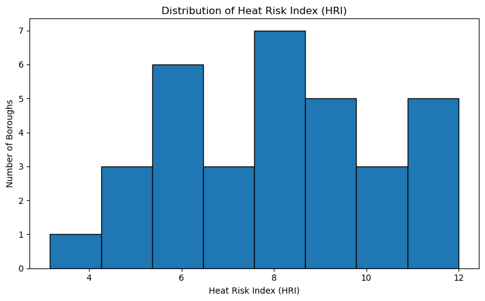

Show the code
import pandas as pdimport pandas as pd# read the data (green cover, population, UHI)
# path
import pandas as pd
green = pd.read_csv("London_borough_lack_green_cover.csv")
pop = pd.read_csv("borough_density_LQ_2021.csv")
uhi = pd.read_csv("Borough_UHI_Proportion_2022.csv")
# 2. Keep useful columns
green = green[["LAD22CD", "LAD22NM", "lack_green_pct"]]
pop = pop[["LAD22CD", "borough_density"]]
uhi = uhi[["LAD22CD", "UHI_proportion"]]
# 3. Merge tables
df = green.merge(pop, on="LAD22CD", how="inner")
df = df.merge(uhi, on="LAD22CD", how="inner")
#print(df.head())# 4. Min-max standardisation to 1-5
def minmax_1_5(series):
return 1 + 4 * (series - series.min()) / (series.max() - series.min())
df["lack_green_score"] = minmax_1_5(df["lack_green_pct"])
df["density_score"] = minmax_1_5(df["borough_density"])
df["uhi_score"] = minmax_1_5(df["UHI_proportion"])
# 5. Calculate Heat Risk Index
df["HRI"] = (
df["lack_green_score"] +
df["density_score"] +
df["uhi_score"]
)
print(df.head()) LAD22CD LAD22NM lack_green_pct borough_density \
0 E09000002 Barking and Dagenham 60.534976 6065.630698
1 E09000003 Barnet 37.432409 4488.866148
2 E09000004 Bexley 47.111812 4070.427681
3 E09000005 Brent 63.965268 7859.510964
4 E09000006 Bromley 21.094023 2197.687663
UHI_proportion lack_green_score density_score uhi_score HRI
0 0.768342 3.117901 2.145379 5.000000 10.263281
1 0.154507 1.877339 1.678466 1.698759 5.254564
2 0.443091 2.397104 1.554558 3.250781 7.202443
3 0.588567 3.302101 2.676585 4.033156 10.011842
4 0.053766 1.000000 1.000000 1.156969 3.156969 # 6. Sort by HRI
df = df.sort_values("HRI", ascending=False)
df.head(34)| LAD22CD | LAD22NM | lack_green_pct | borough_density | UHI_proportion | lack_green_score | density_score | uhi_score | HRI | |
|---|---|---|---|---|---|---|---|---|---|
| 29 | E09000030 | Tower Hamlets | 73.897670 | 15705.678273 | 0.425597 | 3.835452 | 5.000000 | 3.156697 | 11.992149 |
| 12 | E09000013 | Hammersmith and Fulham | 73.326595 | 11161.297281 | 0.604462 | 3.804786 | 3.654313 | 4.118644 | 11.577743 |
| 11 | E09000012 | Hackney | 63.564860 | 13593.699185 | 0.465534 | 3.280600 | 4.374599 | 3.371480 | 11.026678 |
| 24 | E09000025 | Newham | 70.678055 | 9689.900761 | 0.602240 | 3.662565 | 3.218602 | 4.106693 | 10.987860 |
| 18 | E09000019 | Islington | 69.467937 | 14575.536867 | 0.343603 | 3.597584 | 4.665341 | 2.715726 | 10.978651 |
| 0 | E09000002 | Barking and Dagenham | 60.534976 | 6065.630698 | 0.768342 | 3.117901 | 2.145379 | 5.000000 | 10.263281 |
| 21 | E09000022 | Lambeth | 63.575094 | 11839.524316 | 0.398758 | 3.281150 | 3.855151 | 3.012353 | 10.148653 |
| 3 | E09000005 | Brent | 63.965268 | 7859.510964 | 0.588567 | 3.302101 | 2.676585 | 4.033156 | 10.011842 |
| 31 | E09000032 | Wandsworth | 57.321374 | 9560.320199 | 0.507369 | 2.945337 | 3.180230 | 3.596470 | 9.722037 |
| 19 | E09000020 | Kensington and Chelsea | 72.716421 | 11816.881848 | 0.220568 | 3.772021 | 3.848446 | 2.054037 | 9.674503 |
| 27 | E09000028 | Southwark | 57.662435 | 10659.587326 | 0.344515 | 2.963652 | 3.505746 | 2.720631 | 9.190029 |
| 13 | E09000014 | Haringey | 56.724306 | 8930.627584 | 0.381414 | 2.913276 | 2.993765 | 2.919077 | 8.826118 |
| 8 | E09000009 | Ealing | 55.204230 | 6611.798420 | 0.510240 | 2.831651 | 2.307111 | 3.611912 | 8.750674 |
| 30 | E09000031 | Waltham Forest | 55.026012 | 7173.445938 | 0.428827 | 2.822081 | 2.473427 | 3.174067 | 8.469574 |
| 32 | E09000033 | Westminster | 68.617372 | 9514.098187 | 0.155245 | 3.551910 | 3.166543 | 1.702728 | 8.421181 |
| 17 | E09000018 | Hounslow | 48.183516 | 5147.856514 | 0.561445 | 2.454652 | 1.873607 | 3.887293 | 8.215552 |
| 22 | E09000023 | Lewisham | 53.578798 | 8551.382471 | 0.304158 | 2.744368 | 2.881463 | 2.503588 | 8.129419 |
| 5 | E09000007 | Camden | 59.183399 | 9641.080932 | 0.184609 | 3.045324 | 3.204145 | 1.860647 | 8.110117 |
| 25 | E09000026 | Redbridge | 44.653646 | 5502.085276 | 0.532447 | 2.265105 | 1.978502 | 3.731341 | 7.974948 |
| 23 | E09000024 | Merton | 46.533918 | 5721.788434 | 0.472157 | 2.366072 | 2.043560 | 3.407095 | 7.816728 |
| 6 | E09000001 | City of London | 95.584655 | 2974.610282 | 0.024579 | 5.000000 | 1.230063 | 1.000000 | 7.230063 |
| 2 | E09000004 | Bexley | 47.111812 | 4070.427681 | 0.443091 | 2.397104 | 1.554558 | 3.250781 | 7.202443 |
| 10 | E09000011 | Greenwich | 47.677026 | 6108.291729 | 0.311238 | 2.427455 | 2.158012 | 2.541665 | 7.127132 |
| 14 | E09000015 | Harrow | 42.981181 | 5175.353414 | 0.280152 | 2.175297 | 1.881749 | 2.374486 | 6.431532 |
| 28 | E09000029 | Sutton | 43.480435 | 4781.017869 | 0.280146 | 2.202106 | 1.764978 | 2.374450 | 6.341535 |
| 16 | E09000017 | Hillingdon | 39.263868 | 2644.077354 | 0.378385 | 1.975685 | 1.132185 | 2.902786 | 6.010656 |
| 9 | E09000010 | Enfield | 41.789504 | 4014.448780 | 0.268797 | 2.111306 | 1.537981 | 2.313415 | 5.962702 |
| 20 | E09000021 | Kingston upon Thames | 40.127935 | 4512.214832 | 0.239870 | 2.022084 | 1.685380 | 2.157845 | 5.865309 |
| 15 | E09000016 | Havering | 28.960671 | 2332.372622 | 0.389787 | 1.422423 | 1.039883 | 2.964105 | 5.426411 |
| 7 | E09000008 | Croydon | 35.024400 | 4515.850519 | 0.183024 | 1.748034 | 1.686457 | 1.852121 | 5.286612 |
| 1 | E09000003 | Barnet | 37.432409 | 4488.866148 | 0.154507 | 1.877339 | 1.678466 | 1.698759 | 5.254564 |
| 26 | E09000027 | Richmond upon Thames | 30.999518 | 3402.145927 | 0.247116 | 1.531906 | 1.356665 | 2.196817 | 5.085388 |
| 4 | E09000006 | Bromley | 21.094023 | 2197.687663 | 0.053766 | 1.000000 | 1.000000 | 1.156969 | 3.156969 |
df.to_csv("London_HRI_result.csv", index=False)import matplotlib.pyplot as plt
# Make sure HRI is numeric
df["HRI"] = pd.to_numeric(df["HRI"], errors="coerce")
plt.figure(figsize=(8, 5))
plt.hist(df["HRI"].dropna(), bins=8, edgecolor="black")
plt.title("Distribution of Heat Risk Index (HRI)")
plt.xlabel("Heat Risk Index (HRI)")
plt.ylabel("Number of Boroughs")
plt.tight_layout()
plt.show()